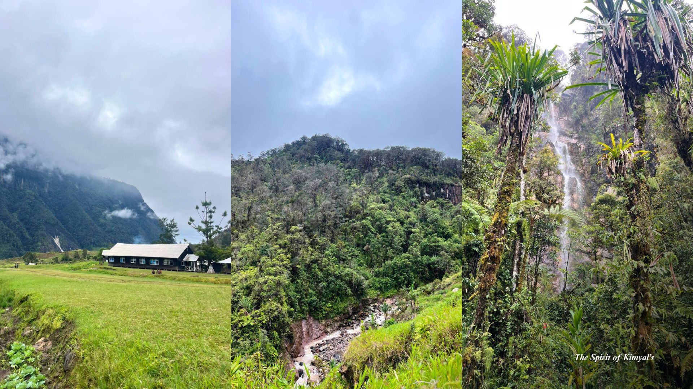

Mengenal Suku Kimyal — jejak budaya, bahasa, dan kekayaan alam dari dataran tinggi Yahukimo, Papua Pegunungan.
"The Spirit of Kimyal's" adalah organisasi nirlaba (Lembaga Swadaya Masyarakat) yang didirikan dengan visi besar untuk mengembangkan potensi masyarakat lokal termasuk mendokumentasikan serta mempublikasikan warisan budaya di wilayah leluhur suku Kimyal. Secara historis, nama Kimyal berakar dari istilah "Kemel Yal" (datang melihat) yang disematkan misionaris pada tahun 1970-an, meskipun masyarakat asli secara turun-temurun lebih mengenal diri mereka sebagai Suku Yalenang—"orang-orang yang mendiami ufuk timur". Sebagai bagian dari rumpun antropologis Orang Mek, yayasan ini bergerak aktif untuk merawat fondasi identitas kultural tersebut agar tetap lestari di tengah arus modernisasi.
Menyusuri kehidupan, budaya, dan bentang alam Suku Kimyal di jantung pegunungan Yahukimo — sebuah kisah tentang identitas dan harmoni dengan alam.

Wilayah persebaran adat Suku Kimyal yang terbagi ke dalam 4 Distrik utama di Kabupaten Yahukimo.
Wilayah ini merupakan daerah dataran tinggi dengan topografi terjal dan elevasi sekitar 5.500 kaki (1,6764 km) dari permukaan laut. Tantangan geografis ini membuat akses transportasi darat sangat terbatas, sehingga mobilitas antardistrik sering kali hanya dapat dijangkau menggunakan penerbangan perintis dengan pesawat-pesawat kecil.
Bahasa Kimyal adalah bahasa daerah yang menjadi identitas dan sarana komunikasi masyarakat Suku Kimyal.
Bahasa Kimyal dituturkan oleh masyarakat di Distrik Korupun, Kabupaten Yahukimo, dan diwariskan dari generasi ke generasi sebagai penanda identitas budaya.
Bahasa Kimyal dituturkan oleh masyarakat kampung-kampung di 4 Distrik, di Kabupaten Yahukimo, Provinsi Papua Pegunungan:
Bentang alam pegunungan dan kekayaan budaya Suku Kimyal menyimpan beragam potensi wisata yang menantang sekaligus memesona.
Potensi pengembangan pertanian padi di dataran tinggi — peluang wisata agro sekaligus penguatan ketahanan pangan masyarakat Kimyal.
Kumpulan potret kehidupan, budaya, dan alam Suku Kimyal. Klik gambar untuk melihat lebih dekat.
Tertarik mengenal lebih jauh Suku Kimyal atau merencanakan kunjungan wisata ke Yahukimo? Hubungi kami untuk informasi lebih lanjut.
Ingin mengetahui lebih banyak tentang Suku Kimyal, budaya, bahasa, atau potensi wisatanya? Sampaikan pertanyaan Anda dan kami akan dengan senang hati membantu.